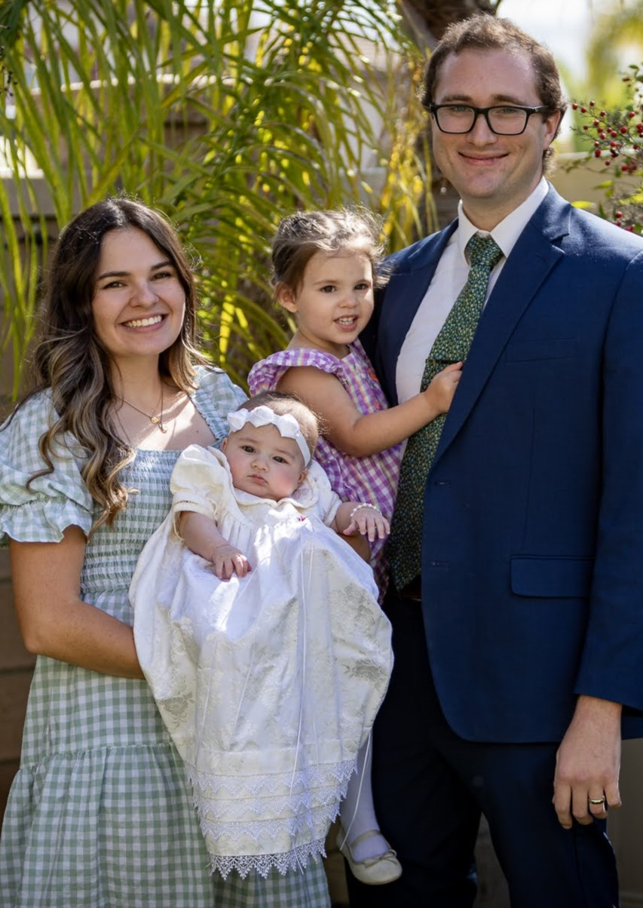

Sophia Cadenhead Stratford | WDD 130
Hello! My name is Sophia Cadenhead Stratford and I live in Murrieta, California. I have 2 daughters, Evelyn(2y) and Alice(5m). I am currently training for a marathon and love to cook! I grew up in California, but moved to Idaho for college before my husband and I decided to move back home. We enjoy spending time at the beach, the zoo, and our local parks. I have 4 siblings, one of whom is getting married next year, and 11 nieces and nephews, all on my husband's side. I have a passion for health and wellness, and ideally would find a job that combines software engineering and health psychology.